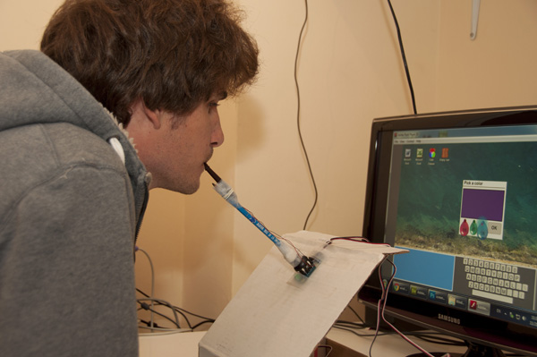

Blow : UI Design
The 'Blow' project is an innovative interaction with the Windows operating system, made for people who cannot use their hands. I redesigned the computer mouse and some of the GUI (Graphical User Interface) common controls that Windows have (buttons, sliders, checkboxes, etc…) to match their capability. It was very important for me to create a fun interactive experience for the special needs user, I created a direct association between the actions of the user and reaction of the GUI.
Blow Device
 Designed as a stick that is connected to a firm surface on one side and is held by the user, with his mouth, on the other side, making it a ‘mouth joystick’. Moving the on-screen pointer is achieved by a slight tilt of the stick in four directions, providing two degrees of freedom. Click-like actions are done by blowing air into the device and inhaling air through it. The device contains a hot-wire anemometer to measure the speed and direction of the airflow.
Blow GUI
A collection of common GUI controls with which the user interacts. These components are designed to respond to the ‘Blow Device’, meaning visually responding to exhalation and inhalation of air upon them.
Blow GUI elements:
- Desktop: Designed as a large water pool, with the icons floating above. The water can be considered as the execution space. Every program icon that is pushed into the water will be executed, and every document icon will be opened.
- Desktop icon: Designed as rafts floating on the water. The user can blow air onto the raft in order to push it into the water and execute that program.
- Pointer: Designed as a transparent hole in which air can flow in and out through it. Has the ability to store icons that have been sucked from the water, and later deploy them in other places, providing a “drag & drop” or a “cut & paste” mechanism.
- Numeric stepper: In places where the user needs to input a precise number, a numeric stepper is present. The numeric stepper is designed as a balloon that the user can inflate or deflate.